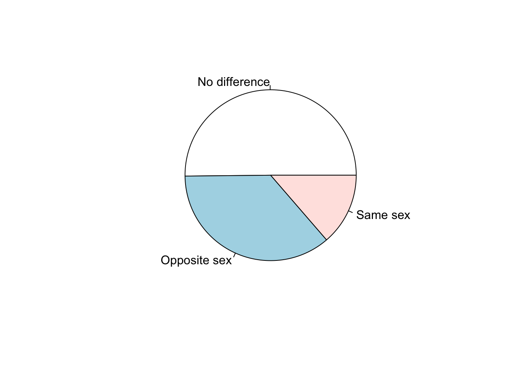
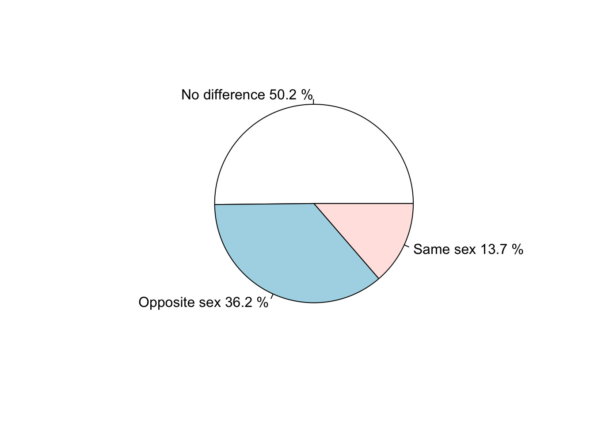

A survey that asked 1,200 U.S. college students about their body perception also asked the following question:
“With whom do you find it easiest to make friends?” (opposite sex, same sex or no difference).
In this activity we will use the collected data to:
Load required dataset:
load("data/friends.RData")Get a summary table of the data:
t = table(friends$Friends)
t##
## No difference Opposite sex Same sex
## 602 434 164Get a summary table, with the proportion of each category.
prop = prop.table(t)
prop##
## No difference Opposite sex Same sex
## 0.5016667 0.3616667 0.1366667Get a summary table, with the percentage of each category.
pct = prop.table(t) * 100
pct##
## No difference Opposite sex Same sex
## 50.16667 36.16667 13.66667Create a pie-chart
pie(t)
Create a pie-chart using the percentages. First round the percentages.
pf = round(pct, 1)
pf##
## No difference Opposite sex Same sex
## 50.2 36.2 13.7Next we will create a label that will include the category name and the percent as the labels for each section of the pie chart. R defaults to alphabetical order for tables and graphic creation so if you create your own labels list the names accordingly.
lbl = paste(c("No difference", "Opposite sex", "Same sex"), pf, "%", sep = " ")
lbl## [1] "No difference 50.2 %" "Opposite sex 36.2 %" "Same sex 13.7 %"Finally, create the pie chart with the new label added
pie(t,label=lbl)